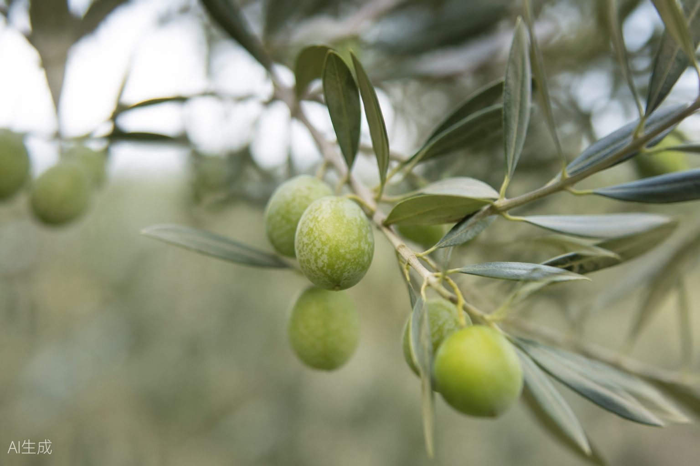

De la idea
al rendimiento
SAFI Sistemas nace en 1992 con una idea clara: elevar la calidad del aceite de oliva mejorando cada fase de la recepción del fruto. Hoy acompañamos a almazaras de más de 15 países desde el primer plano hasta el mantenimiento de cada campaña.


Servicio /01
Asesoría técnica
Estudiamos tu explotación y te recomendamos exactamente lo que tu proceso necesita.
Análisis de producción
Estudiamos volúmenes, tiempos de campaña y el flujo de recepción del fruto en tu almazara.
Diseño del layout
Planificamos la distribución de la instalación y dimensionamos cada equipo al milímetro.
Propuesta cerrada
Recibes una propuesta técnica y económica clara, con plazos viables y comprometidos.
Servicio /02
Comercialización
Equipos de última generación con cobertura internacional y entrega garantizada en más de 15 países.
Certificación propia Toda la maquinaria SAFI cumple la normativa CE y trabaja bajo un sistema de calidad ISO 9001 certificado desde 1995.
Logística coordinada Transporte y puesta en marcha planificados con tu calendario de campaña, para no perder ni un día de cosecha.
Alcance global Presencia consolidada en Europa, África, Asia, América y Oceanía, con más de 15 países trabajando con sistemas SAFI.
Servicio /03
Post-venta
Soporte técnico cercano para que tu equipo trabaje sin preocupaciones, campaña tras campaña.
Puesta en marcha
Instalamos el equipo y formamos al personal de tu almazara para sacarle el máximo desde el primer día.
Mantenimiento programado
Revisiones planificadas y recambios originales SAFI que alargan la vida útil de cada máquina.
Soporte directo
Un interlocutor único que conoce tu instalación y responde cuando lo necesitas, estés donde estés.
04 Cómo trabajamos
Un proceso sin sorpresas
Cinco pasos claros, con plazos cerrados y un único interlocutor técnico de principio a fin — tú siempre sabes en qué punto está tu proyecto.

01
Escuchamos
Nos cuentas cómo es tu explotación: volúmenes, tiempos de campaña y qué te gustaría mejorar.
02
Estudiamos
Nuestro equipo técnico analiza tu caso y diseña la configuración óptima de la línea.
03
Proponemos
Recibes una propuesta técnica y económica detallada, con plazos viables y comprometidos.
04
Instalamos
Fabricamos, transportamos y ponemos en marcha tu equipo, formando a tu personal.
05
Acompañamos
Mantenimiento programado, recambios y soporte directo durante toda la vida útil de la máquina.